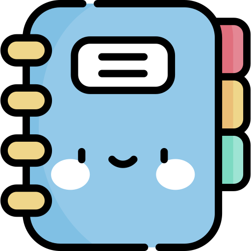

Eu & Você
Anotações
Lista
Musicas
Este é o Cantinho Larian
Um site criado especialmente para a sua diversão,
e, claro, um lugar para expressar todos os elogios que eu desejar. com música, espaço para as suas anotações criativas e listas, 😄